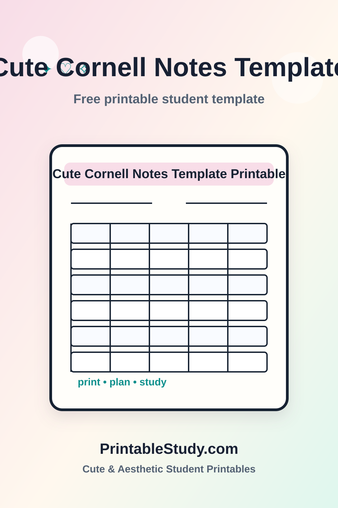

About this cute printable
Class notes are easier to study when key questions, main notes, and summary ideas are separated on the page. This cute Cornell notes template printable gives students a pretty but usable place to write down the details they need for school. It is designed for students who like soft stationery, study desk photos, pastel planners, and printable pages that feel organized without looking plain.
The layout keeps the cute details around the edges so the main writing area stays practical. Students can use it before class, during homework time, in a study binder, or as part of a weekly desk reset. The pastel style is meant to feel calm, but the printable still works like a normal school planning page.
If you prefer a very simple black-and-white layout, the Classic Collection version is linked below. If you want a more aesthetic printable for Pinterest boards, journaling folders, or a softer study setup, this cute version is the better fit.
Download and print
Print this template now, or choose Save as PDF in your browser print window.
Pinterest preview image
Use this vertical preview to share or save the cute Cornell notes template printable on Pinterest. The image is 1000 by 1500 pixels and includes the template title, a soft pastel background, a worksheet preview, and PrintableStudy.com.

Template preview
Cute Cornell Notes Template Printable
Use cue questions, notes, and a summary for review.
What is included
- Cue column for questions or key terms
- Large notes area for class information
- Summary box for review
- Subject and date fields
- Cute stationery-inspired decoration
- A printable notes layout for school or tutoring
How to use this template
- Print one page for each class lecture or reading section.
- Write key questions in the left cue column.
- Use the main area for notes, examples, and diagrams.
- Add a short summary after class.
- Review by covering the notes and answering the cue questions.
Best for
- Middle school students learning how to manage school routines.
- High school students balancing homework, exams, and activities.
- College students who want a simple printable page beside a laptop or planner.
- Homeschool families who like reusable printable organization pages.
- Tutoring sessions where a student needs a clear next-step page.
- Teachers and parents who want a gentle, student-friendly planning tool.
Example use case
During science class, a student writes vocabulary words in the cue column and explanations in the notes area. At home, they write a three-sentence summary and use the cue column for quick review before a quiz.
Printing tips
Print this cute Cornell notes template printable on US Letter or A4 paper. Choose fit to page in the print window so the border, pastel tabs, and worksheet area stay inside the margins. For regular reuse, place the page in a binder, clipboard, planner cover, laminated pouch, or dry erase sleeve. A dry erase sleeve is especially useful for routines that repeat every week because students can write, wipe, and use the same printed design again.
Classic version
Looking for a simpler version? Try our Classic Cornell Notes Template Printable.
FAQ
Is this cute Cornell notes template printable free?
Yes, this cute Cornell notes template printable is free to print and use for school, homework, tutoring, homeschool, or personal study planning.
Can I save this printable as a PDF?
Yes. Use the print button and choose Save as PDF in your browser print window. You can keep the PDF on your device or print a new copy later.
What paper size should I use?
US Letter and A4 both work well. Choose fit to page before printing so the border and printable table stay inside the page margins.
Can teachers use this printable?
Yes. Teachers, tutors, and homeschool families can print it for classroom organization, study support, or individual student planning.
How often should students use this printable?
Most students can print a new copy weekly, monthly, per class, or before each exam depending on the template and school routine.
Is the cute design still practical for printing?
Yes. The design uses soft pastel accents and small decorations, but the worksheet area stays clear enough for handwriting and normal home printing.